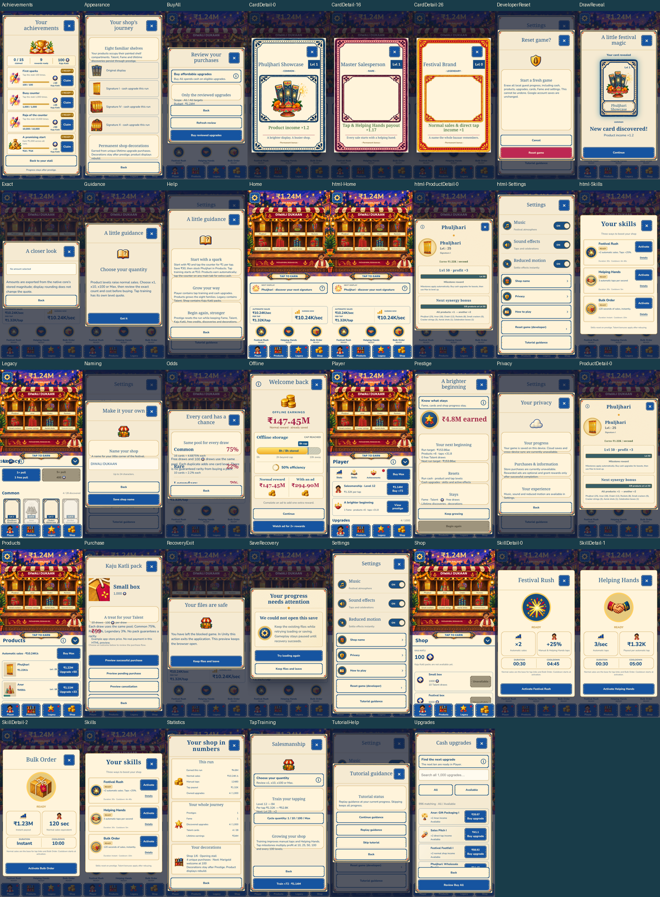
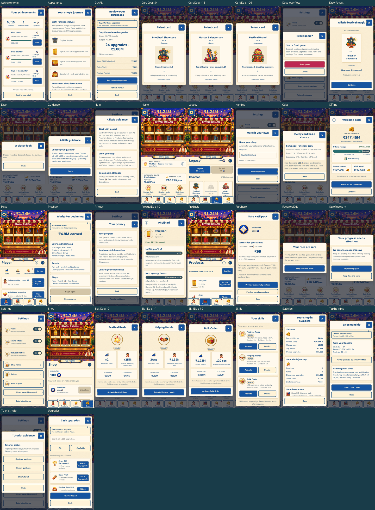
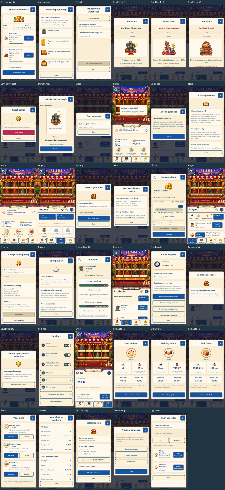

Gouache Bazaar UI unification
One warm parchment family, cobalt controls, restrained gold trim, Native Heading and Native UI typography, and shared component roles across the full player journey. The full stall stays visible above management tabs.
Before
68.5 / 100

Captured from the pushed checkpoint before redesign.Qualified HTML
95.9 / 100

Two complete audits. Shared tokens, components, artwork manifest and interaction specification.Native Unity
95.1 / 100

Two complete audits at four viewports, including scroll endpoints and safe-area cases.
Scores are documented manual self-assessments under the frozen rubric. Functional checks are reported separately. Minor limits remain around short-screen scrolling, dense ledgers and historic illustration texture differences.
Android install-and-launch validation is pending: no device or emulator was available. No physical-device pass is claimed.